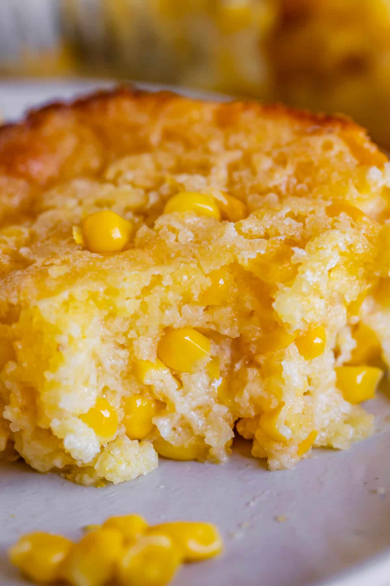

Recipes:
Home Page
Corn Casserole
Hawaiian Ham Sandwiches
Sweet Beef & Rice
The Cosmic Corn Casserole

Description
This simple holiday side dish is a southern corn casserole recipe from Paula Deen. Ingredients include whole kernels, cream-style corn and a box of corn muffin mix.
Ingredients
- 1 (15 1/4 oz) can drained whole kernel corn
- 1 (14 3/4 oz) can cream-style corn
- 1 cup sour cream
- 1/2 cup (1 stick) melted butter
- 1 (8 oz) package corn muffin mix
- medium shredded cheddar cheese
Directions:
- In a large bowl, stir together the two cans of corn, corn muffin mix, sour cream, and butter.
- Pour into a greased casserole dish.
- Bake at 350° for 40-45 minutes, or until golden brown.
- Top with generous amount of cheddar cheese and return to oven for another 5 minutes until cheese is melted.